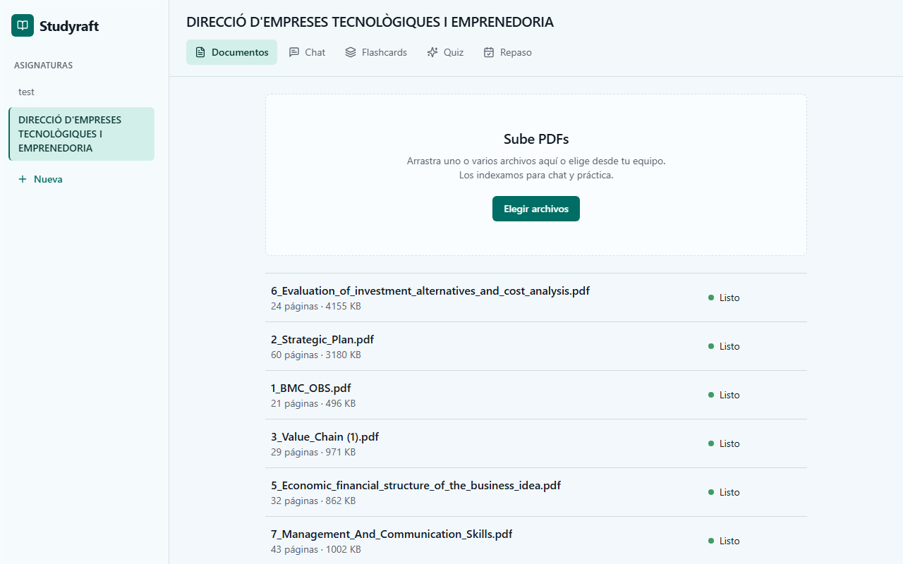
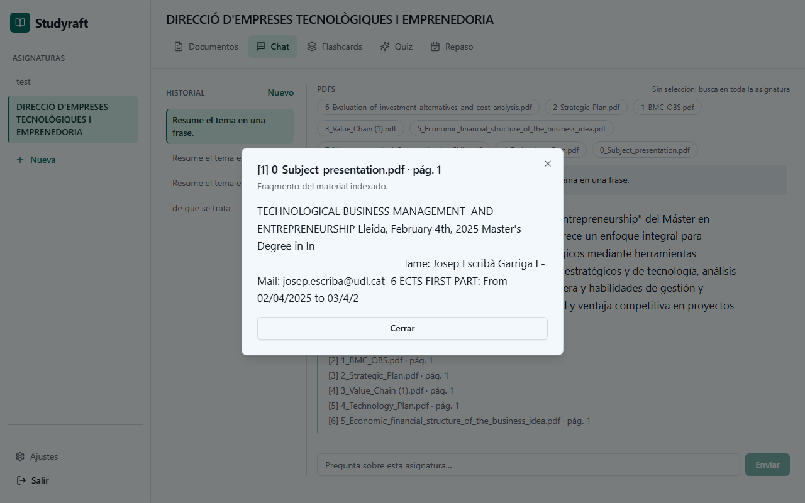
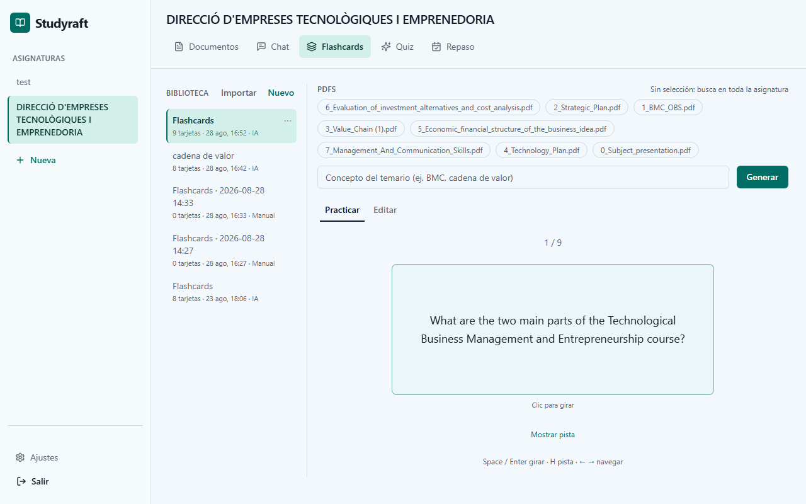
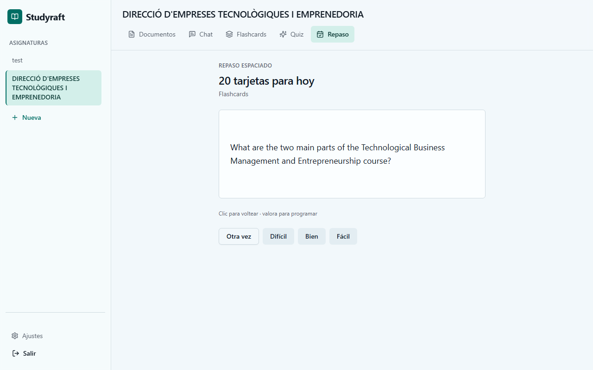

La resposta depèn d’un context, no només dels paràmetres.
F pantalla · N notes · ← →
Treball de Fi de Màster · EPS UdL
Assistent d’estudi RAG sobre documents propis. Un cicle, no un xat.
Hao Yang
Màster universitari en Enginyeria Informàtica
Director: Jordi Planes Cid · setembre 2026
Problema
Cicle
La literatura cubreix cada baula. El forat és tancar-les com a sistema.
Estat de l’art · RAG
Lewis et al. (2020): retriever + generador condicionat als documents recuperats.
La resposta depèn d’un context, no només dels paràmetres.
La qualitat depèn més de què es recupera que de la mida del model.
Cal un retriever honest, cites i un prompt que no inventi.
Estat de l’art · indexar
| Estratègia | Idea | Risc |
|---|---|---|
| Finestra fixa | N caràcters | Talla definicions |
| Per capçaleres | Una secció ≈ un chunk | Molts apunts no tenen títols |
| Studyraft | Cascada, 1200 / solapament 150 | Sense OCR |
Capçaleres → paràgrafs → oracions → tall dur. Barnett: els primers fallos d’un RAG són d’índex, no de l'LLM.
Estat de l’art · recuperar
Embeddings + pgvector. «Què és el potencial d’acció?»
FTS / família BM25. Sigles, fórmules, còpia literal del PDF.
Uneix llistes sense entrenar un model. El rerank LLM és un extra car.
Estat de l’art · fidelitat
Estat de l’art · literatura vs mercat
| PDF propis | Cites | Pràctica | SRS | |
|---|---|---|---|---|
| PaperQA | papers | sí | no | no |
| Anki / SM-2 | no natiu | no | sí | sí |
| NotebookLM | sí | sí | limitat | no |
| Studyraft | sí | sí | sí | SM-2 |
No és un ranking. Tampoc un ITS: no modelem l’alumne més enllà del calendari.
Posicionament
Indexar, citar, practicar i repassar sobre PDF privats, amb límits visibles i tests.
Contribucions
Objectius
Arquitectura
RAG · dues fases
Parse, chunks (vector + FTS), sinopsi de 4–6 frases. Desenes de segons, fora de l’HTTP.
Intent, híbrid, cites. Els bytes del PDF no es reenvien al model. El mateix camí serveix el quiz.
RAG · ingestió
Parse buit = error honest. No hi ha OCR. Cada etapa deixa traça de durada i fallada.
RAG · configuració de producte
| Peça | Estat | Per què |
|---|---|---|
| Híbrid dens + FTS + RRF | sempre | Paràfrasi i literals del PDF |
| Intent resum / capítol / factual | sempre | Abans de cercar |
| Sinopsi jeràrquica | defecte ON | Preguntes àmplies |
| Rerank LLM / agentic | defecte OFF | Latència i cost |
RAG · intent
FTS enganxa el terme copiat; l’embedding, la paràfrasi. RRF deixa 8 chunks amb pàgina.
Es reescriu la consulta, es diversifica per document i s’injecten sinopsis.
Filtre pel número al nom de fitxer. «Explica el tema 3» no és un veí dens de «explica».
RAG · híbrid
RRF = Σ 1 / (60 + rang) · producte k = 8
RAG · sinopsi
4–6 frases per PDF en pujar. Una pregunta àmplia llegeix el temari, no una sola diapositiva.
Si es desactiva el flag, l’índex de chunks continua sent vàlid.
RAG · confiança
Lecture-focused: el context ve dels apunts, no d’un corpus web.
Demo
Demo · guió
Xarxa · documents

Xarxa · xat

Xarxa · pràctica

Xarxa · planner

Avaluació · programari
Playwright no executa el RAG. El cicle el demostra la demo.
Avaluació · retrieval · 31/08/2026
8 consultes factuals · 114 chunks · k = 10 al CLI (producte k = 8)
| Política | p50 | max |
|---|---|---|
| Híbrid RRF | 369 ms | 3991 ms |
| Híbrid + rerank LLM | 1608 ms | 2745 ms |
El max 3991 ms és la primera consulta, en fred. No afirmis rellevància.
Límits
Tancament